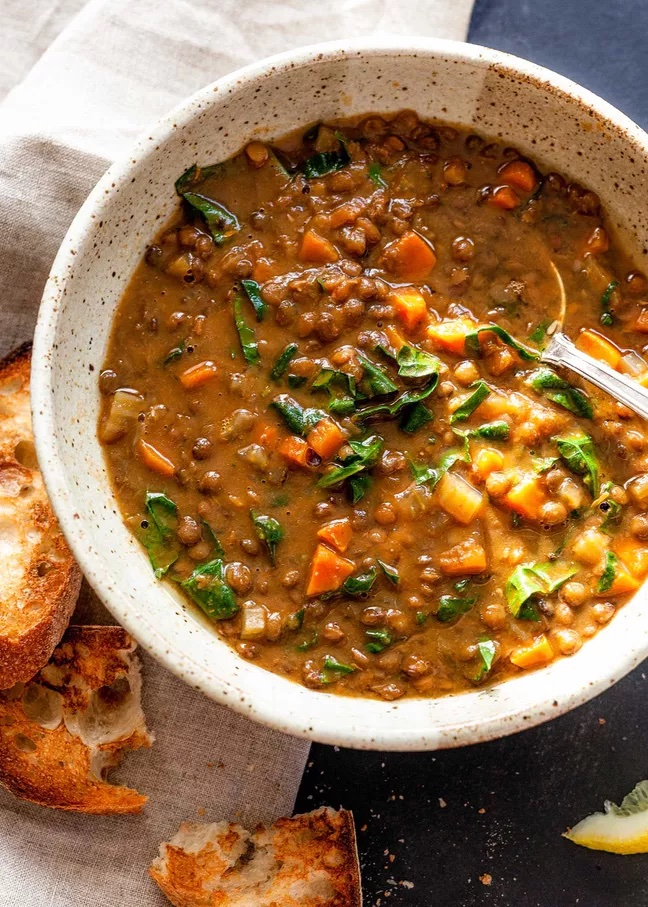

Lentil Soup

I'm not a strict vegetarian anymore but when I was, Lentils were probably the only thing keeping me alive. They are extremely nutrient rich and can take nearly any seasoning to create truly unique flavor combinations.
This soup recipe is a base for experimentation, meant to be a safe place to start but leaves plenty of room
to adapt to your particular taste.
Ingredients
- ¼ cup extra virgin olive oil
- 1 medium yellow or white onion, chopped
- 2 carrots, peeled and chopped
- 4 garlic cloves, pressed or minced
- 2 tsp ground cumin
- 1 tsp curry powder
- 1/2 tsp dried thyme
- 1 large can (28 ounces) diced tomatoes, lightly drained
- 1 cup lentils
- 4 cups vegetable broth
- 2 cups water
- 2 tsp salt
- 1 tsp black pepper
- 2 TBSP lemon juice
Steps
- Warm olive oil in pot on medium heat.
- Add chopped onion and carrot to cook. Stir Often until onions are softened
- Add garlic, cumin, curry powder, & thyme. Pour in drained diced tomatoes. Stir often.
- Pour in lentils and broth. Add salt and black pepper. Bring pot to a boil. Partially cover the pot and reduce heat to a simmer. Cook for 30 minutes or until lentils are tender.
- Blend partially using immersion blender.
- Add lemon juice to pot.
- Adjust salt levels to taste and enjoy!